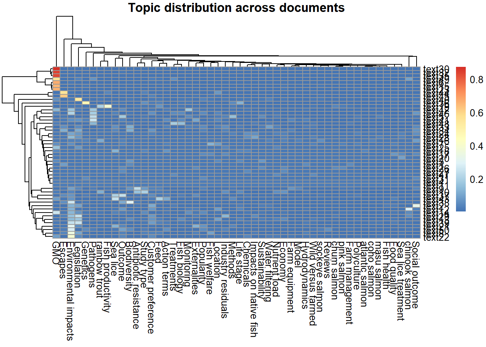

| topic | Topic_Label | Top_Terms | Prevalence |
|---|---|---|---|
| 21 | Environmental impacts | environment, management, future, current, information, need, challenges, many, title, methods | 0.056 |
| 10 | Pathogens | virus, viral, pathogen, infectious, infection, virulence, isolates, isav, vaccines, outbreak | 0.047 |
| 13 | Feed | diet, fatty, acid, fed, meal, diets, oil, protein, dietary, g | 0.047 |
| 48 | Fish biology | cells, genes, expression, immune, response, liver, gene, cell, gut, behaviour | 0.037 |
| 40 | Legislation | policy, social, case, global, local, innovation, sustainability, public, economic, resource | 0.036 |
| 44 | Location | freshwater, populations, river, genetic, ocean, population, rivers, escaped, native, lake | 0.036 |
| 45 | Study type | model, cage, cages, net, system, laboratory, processing, tank, ras, density | 0.036 |
| 35 | Life stage | juvenile, adult, egg, harvest, smolt, fry, groups, parr, hatchery, size | 0.034 |
| 18 | Customer preference | market, products, consumer, seafood, demand, price, supply, product, consumers, norwegian | 0.032 |
| 30 | Externalities | resistance, salmonis, louse, lepeophtheirus, parasite, host, infection, infestation, parasites, caligus | 0.032 |
| 19 | Food quality | fillet, flesh, concentrations, samples, content, meat, quality, antioxidant, consumption, omega-3 | 0.027 |
| 32 | Monitoring | gill, assay, samples, detection, agd, n, dna, pcr, perurans, detect | 0.024 |
| 34 | Action terms | treatment, feeding, days, treatments, treated, exposure, concentrations, day, surveillance, incidence | 0.024 |
| 36 | Outcome | mortality, health, survival, behaviour, susceptibility, risk, diseases, factors, behavior, exposure | 0.024 |
| 12 | Fish welfare | welfare, stress, cortisol, blood, plasma, activity, response, group, physiological, swimming | 0.023 |
| 20 | Treatments | bacteria, salmonicida, strains, antimicrobial, antibiotic, bacterial, isolated, aeromonas, isolates, florfenicol | 0.022 |
| 23 | Nutrient load | sediment, communities, organic, sludge, sites, benthic, effluent, microbiota, microbial, bacterial | 0.021 |
| 29 | Escapes | escape, scotland, coast, areas, fishing, fisheries, norwegian, escaped, fishery, fjord | 0.021 |
| 39 | Social outcome | human, food, system, systems, culture, million, global, produced, tons, life | 0.021 |
| 37 | Wild versus farmed | genetic, selection, hybrid, breeding, introgression, traits, hybrids, differences, domesticated, families | 0.020 |
| 50 | Methods | muscle, histological, changes, lesions, red, affected, skin, heart, skeletal, tissue | 0.020 |
| 14 | Genetics | c, triploid, temperature, diploid, temperatures, thermal, prevalence, triploids, lower, ploidy | 0.017 |
| 22 | Antibiotic resistance | mussels, nitrogen, nutrient, n, waste, mussel, c, imta, integrated, blue | 0.017 |
| 24 | Biodiversity | chile, chilean, ecosystem, southern, coho, biodiversity, south, region, patagonia, areas | 0.016 |
| 26 | Fish productivity | performance, yield, productivity, mass, method, extract, liquid, extraction, obtained, spectrometry | 0.015 |
| 27 | Industry residuals | canada, british, columbia, chinook, pacific, pink, tshawytscha, chum, sockeye, juvenile | 0.015 |
| 33 | Sea lice treatment | lumpfish, wrasse, delousing, cleaner, deltamethrin, ballan, biofouling, lumpus, cyclopterus, nets | 0.015 |
| 11 | Fish health | health, performance, survival, condition, productivity, necrosis, maturation, inflammation, sp, immunity | 0.014 |
| 41 | Farm management | brown, salmonids, trutta, s, salmonid, arctic, g, brook, salvelinus, gyrodactylus | 0.014 |
| 47 | Impacts on native fish | methods, abstracttext, learning, approach, method, classification, features, detection, machine, label | 0.014 |
| 15 | GMO | transgenic, food, animal, share, recombinant, veterinary, safety, aquadvantage, crispr, scientific | 0.013 |
| 17 | Chemicals | chemical, risk, antibiotic, discharge, oxytetracycline, florfenicol, function, efficiency, futures, contaminant | 0.013 |
| 28 | Model | model, de, en, la, y, el, predict, los, del, se | 0.013 |
| 46 | Polyculture | fishes, carp, bass, catfish, bream, european, cultured, gairdneri, black, common | 0.013 |
| 1 | atlantic salmon | de, et, al, la, des, les, en, le, du, saumon | 0.012 |
| 2 | rainbow trout | cod, steelhead, saithe, sh, iceland, gadus, styled-content, elements, morhua, tissue | 0.012 |
| 5 | chum salmon | tract, ph, gastrointestinal, eq, nm, intestine, gi, digestion, microplastics, nanoparticles | 0.012 |
| 16 | Farm equipment | cage, sup, t, tank, sub, land-based, s, h, pen, h2o2 | 0.012 |
| 4 | chinook salmon | r, m, e, lt, ds, d, gt, j, cerebralis, smolts | 0.011 |
| 8 | pink salmon | light, h, floating, surface, design, blue, exposed, structure, wave, dark | 0.011 |
| 25 | Economy | bay, profit, maerl, fundy, emergy, cost-effective, brunswick, al, island, et | 0.011 |
| 6 | masu salmon | green, malachite, microsporidian, motility, ikan, mutant, parent, antimycin, dan, desmozoon | 0.010 |
| 7 | sockeye salmon | loss, germ, delta, fishes, ichthyobodo, gnrh, og, necator, conclusion, targeted | 0.010 |
| 9 | Sea lice | parasites, larvae, mackerel, anisakis, examination, specimens, gh, simplex, milt, morphometric | 0.010 |
| 31 | Reviews | list-item, joint, venture, watercourses, interior, pollution, tend, chl, pgcs, series | 0.010 |
| 38 | Hydrodynamics | w, saprolegnia, hydrodynamic, university, k, frontiers, parasitica, centre, institute, department | 0.010 |
| 42 | Sustainability | islands, faroe, problem, symposium, section, seen, routing, ps, prospects, combined | 0.010 |
| 43 | Popularity | media, chapter, opinion, controversy, circular, waste, trade, dispute, cfp, lessons | 0.010 |
| 49 | Water filtering | ruckeri, yersinia, y, yersiniosis, enteric, mlva, redmouth, o1, erm, serotype | 0.010 |
| 3 | coho salmon | investigation, debris, temperature, der, melatonin, modified, seen, status, britain, white | 0.009 |
Topic Modelling
Methods
We conducted topic modelling on bibliographic data exported from Rayyan.
RIS files were imported with the synthesisr package, cleaned, and converted into a document-feature matrix using quanteda.
We applied both unsupervised Latent Dirichlet Allocation (LDA) and semi-supervised seededLDA, using a domain-specific dictionary to improve interpretability.
Results
Topic Prevalence
We calculated the mean prevalence of each topic across the corpus.Topic prevalence indicates the proportion of content associated with each topic across the corpus, highlighting which themes are dominant versus niche.In a seededLDA the prevalence may be skewed toward the dictionary of terms inflating the prevalence of rare terms.
Top Terms per Topic (same as table— could be prettier)
The most frequent terms characterising each topic are shown below.

Heatmap of Documents × Topics
This shows the distribution of topics across the first 50 documents (rows clustered).

The topics with the largest number of documents are highlighted in warmer colours (farm management and legislation).
Interactive Exploration (Supplementary??)
We also generated an interactive LDAvis visualisation (HTML only, not for PDF).
Interpretation
Seeded LDA produced topics consistent with the predefined dictionary, ensuring interpretability.Topic prevalence highlights dominant themes in the literature.
Compare seeded and unseeded LDA
Compare top terms per topic
top_terms_unseeded <- terms(lda, 10)
top_terms_seeded <- terms(lda_seed, 10)
# Combine into comparison table
compare_terms <- data.frame(
Topic = rep(1:10, 2),
Model = rep(c("Unseeded", "Seeded"), each = 10),
Terms = c(sapply(top_terms_unseeded[1:10], paste, collapse = ", "),
sapply(top_terms_seeded[1:10], paste, collapse = ", "))
)
knitr::kable(compare_terms, row.names = FALSE, caption = "Comparison of top terms by model")| Topic | Model | Terms |
|---|---|---|
| 1 | Unseeded | fatty |
| 2 | Unseeded | acid |
| 3 | Unseeded | acids |
| 4 | Unseeded | content |
| 5 | Unseeded | oil |
| 6 | Unseeded | quality |
| 7 | Unseeded | lipid |
| 8 | Unseeded | dha |
| 9 | Unseeded | epa |
| 10 | Unseeded | composition |
| 1 | Seeded | de |
| 2 | Seeded | et |
| 3 | Seeded | al |
| 4 | Seeded | la |
| 5 | Seeded | des |
| 6 | Seeded | les |
| 7 | Seeded | en |
| 8 | Seeded | le |
| 9 | Seeded | du |
| 10 | Seeded | saumon |
This shows that the seeded LDA pulls topics closer to our dictionary.
Compare document assignment stability
For each document, compare the “most likely topic” under seeded vs unseeded.
doc_topics_unseeded <- apply(lda$theta, 1, which.max)
doc_topics_seeded <- apply(lda_seed$theta, 1, which.max)
agreement <- mean(doc_topics_unseeded == doc_topics_seeded)
agreement[1] 0.01266682We compared document-level topic assignments between unseeded LDA and seeded LDA. Only 1.27 % of documents were assigned to the same dominant topic under both models, indicating that the seeded model substantially reallocated documents to dictionary-guided topics.